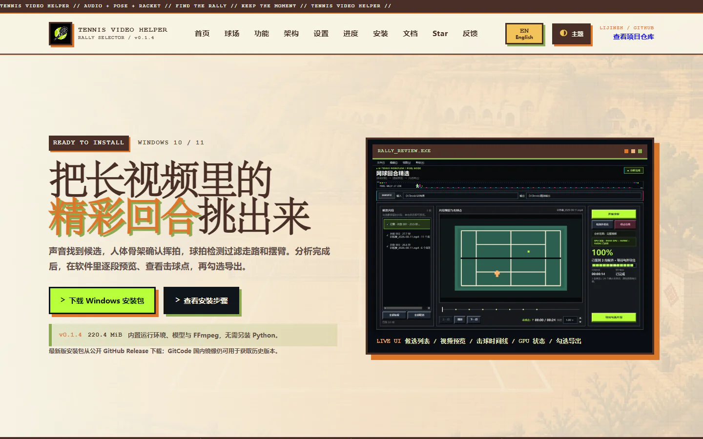

FEATURED / 0101 / OPEN SOURCE
从真实问题出发的
开源项目。
这里不是陈列柜，而是一组持续生长的实验：从视频理解、AI 图像工具到实体交互设备， 每个项目都尽量留下代码、文档和可复现的使用路径。

02 / RESEARCH SIGNALS
我感兴趣的
研究方向。
我更关心不同技术在真实系统里相遇的地方：感知如何变得可信，模型如何进入设备，人又如何自然地与智能系统协作。
GP
OPEN LAB
01
多模态感知
把声音、视觉、姿态与时序信息组合起来，让机器看懂动态场景。02
具身智能与机器人控制
从运动学、动力学到真实硬件，研究模型如何产生可执行的动作。03
人机 / Agent 交互
探索按键、语音、状态反馈与自动化之间更直接、更自然的协作方式。04
可靠 AI 工具
关注安全配置、可复现流程、失败边界与真实环境中的交付质量。03 / FIELD NOTES
目前正在
研究的内容。
这些不是已经盖章的答案，而是正在被实现、测试与修正的问题。仓库是研究记录的一部分。
04 / TRANSMIT
有意思的问题，
一起把它做出来。
如果你也在研究机器人、计算机视觉、AI 工具，或者只是对某个开源项目有想法，欢迎通过 GitHub 联系我。
VISIT @LIJINZH ↗